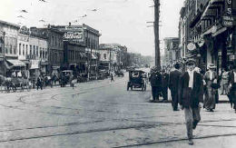
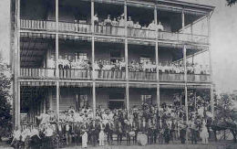
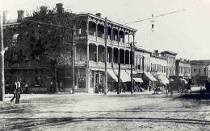

portfolio.

pros and cons

chat atcha

image gallery

I have 6+ years of experience developing desktop and console applications. After attending a
Ruby on Rails development weekend at the end of 2013, I began falling in love with web development.
I spent the next several months familiarizing myself with Ruby on Rails as well as taking on an
ASP.NET project at work with much success. At that point, I knew it was time to make a change and
pursue web development full-time. In March of 2014 I was accepted into the Front End Web Engineering
Academy at The Iron Yard. After 3 months of "jumping into the deep end" at The Iron Yard, I'm excited
to start building phenomenal web applications full-time.
When I'm not pumping out clean, responsive webification, I enjoy being outdoors with my wife, listening to
and creating great music, and pursuing a fantasy career in disc golf.